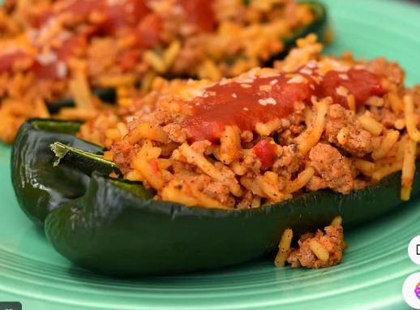

Poblano RECIPES

Poblano Recipes
They're typically dark green and resemble other varieties of peppers, but they tend to be larger than jalapeños
and smaller than bell peppers.
Ingredients
- 12 dried ancho chiles.
- 12 dried guajillo chiles.
- 6 dried pasilla chiles.
- 4 tablespoons sesame seeds.
- 1 teaspoon aniseed.
- 1 teaspoon black peppercorns.
- 1/2 teaspoon whole cloves.
- 1 teaspoon dried thyme.
Steps
- Preheat oven to 425 degrees F.
- Rinse and pat dry poblano peppers and place on a baking sheet.
- Turning occasionally, roast in oven for 20-25 minutes until all sides are charred and blistered.
- Peppers can also be roasted on an open flame or on a griddle.